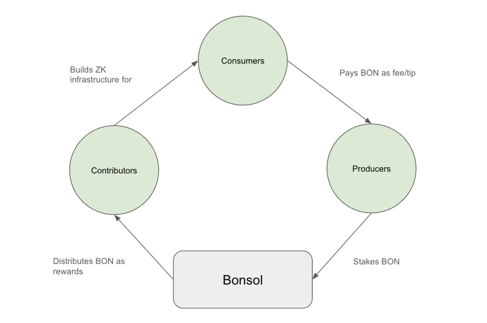

Verifiable Compute (VC) is a cryptographic technique that centers on running a specific workload in a way that produces an attestation of its workings which can be publicly verified without running the computation again. In practice, VC utilizes different cryptographic primitives to ensure computational integrity. Ultimately, this enables external parties to run computations on behalf of a user while ensuring the validity of the computation's inputs, outputs, and methods. The cost benefits and efficiencies of this approach are massive at scale.
Bonsol is a public good for enabling VC on Solana by providing:
A marketplace for producing and consuming proofs
Libraries and SDKs for easy application integration
Economic incentives that align the entire network
Its objectives are:
Fair Pricing: The most competitive and fair pricing for verifiable compute tasks - in a way that is fair to provers and consumers.
Quality of Service: Lowest latency of response times for workload requests with consistent accuracy for the responses received.
Decentralization: Without compromising to become centralized.
Ecosystem Agents
Provers
The engine behind a fully decentralized Bonsol, providing resources for completing workload requests.
Consumers
Applications and individuals requiring off-chain computation solutions.
Contributors
Developers and researchers who contribute to Bonsol's codebase, documentation, and research.

Ecosystem Flywheel
Bonsol Workflow
The Bonsol workflow is as follows:
Create Execution Request: A consumer (e.g. a Solana program) initiates a VC task by creating an Execution Request (ER). This ER contains information about the ZK program they would like to execute, the inputs, the time interval in which the compute workload must be proven and a tip to incentive provers.
Broadcast Execution Request: The ER gets broadcasted to a set of provers and they must decide if they want to claim the execution request and start proving.
Claim Execution Request: If a prover decides they want to perform this computation they submit a claim on it. If they are the first to get the claim, then their proof will be accepted until a certain time. If they fail to produce the proof in time, other provers can claim the execution. In order to claim the producer must put up some stake that will be slashed if they fail to produce a correct proof.